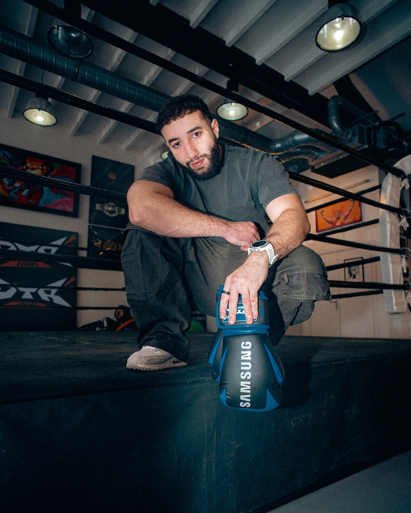

Biographie de Billy (RebeuDeter)
Billal Hakkar, plus connu sous le pseudonyme RebeuDeter ou simplement Billy, est un streameur, vidéaste et créateur de contenu français né le 28 avril 1997 à Nanterre, en région parisienne.
Ses débuts sur Twitter : Avant de devenir une star du streaming, Billy s'est fait remarquer sur Twitter (aujourd'hui X) au milieu des années 2010. Grâce à son humour percutant, son sens de la répartie et ses anecdotes du quotidien racontées avec spontanéité, il rassemble rapidement une communauté fidèle et très active.
L'explosion sur Twitch et YouTube : Encouragé par ses abonnés, il lance sa chaîne Twitch où ses diffusions en direct mêlant discussions nocturnes (libres antennes), jeux vidéo et concepts originaux rencontrent un succès immédiat. Son naturel et son franc-parler lui permettent de franchir le cap des deux millions d'abonnés et de collaborer régulièrement avec d'autres figures majeures du web français comme AmineMaTue, Squeezie ou Inoxtag.
Une figure incontournable du divertissement : Au-delà de ses lives quotidiens, Billy s'est imposé par sa capacité à porter des projets ambitieux alliant sport, dépassement de soi et solidarité, à l'image de sa participation aux courses de Formule 4 du GP Explorer, aux marathons caritatifs Stream for Humanity ou encore de l'organisation de son propre gala de boxe, le DTR Fight, à Paris La Défense Arena.
